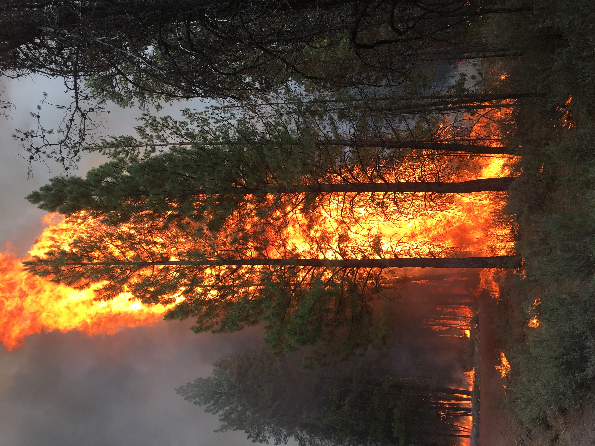
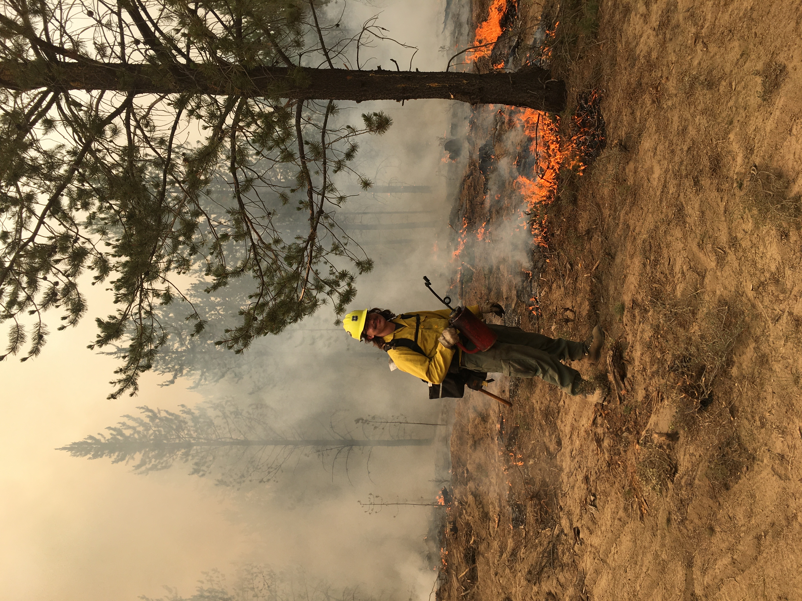
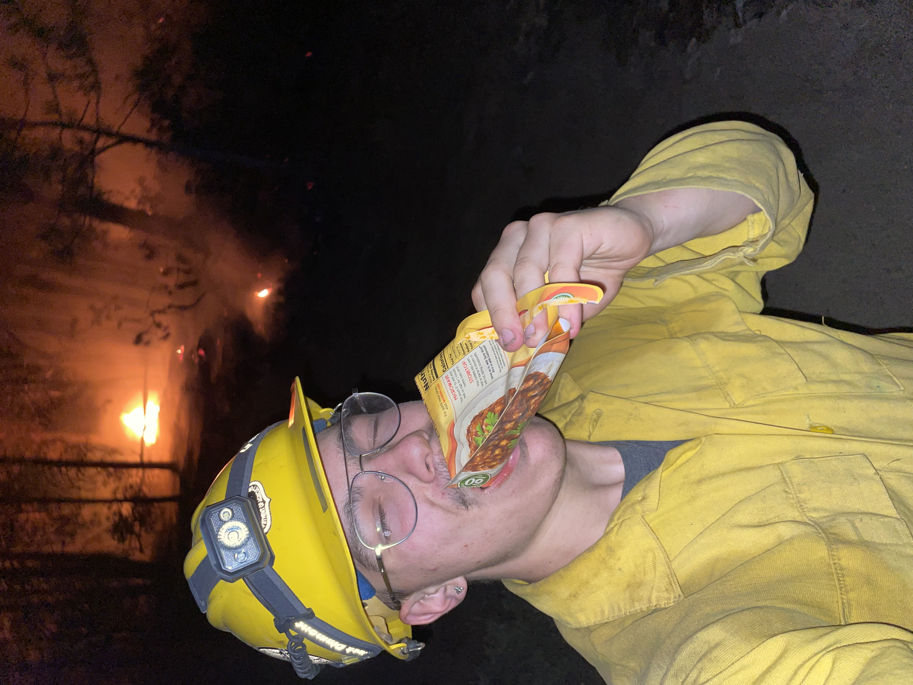
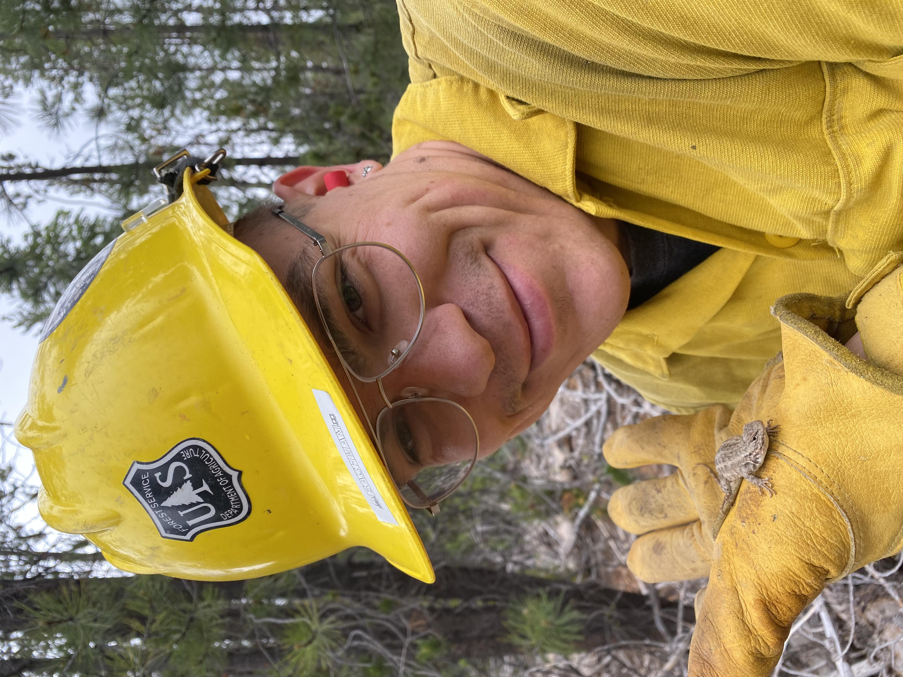
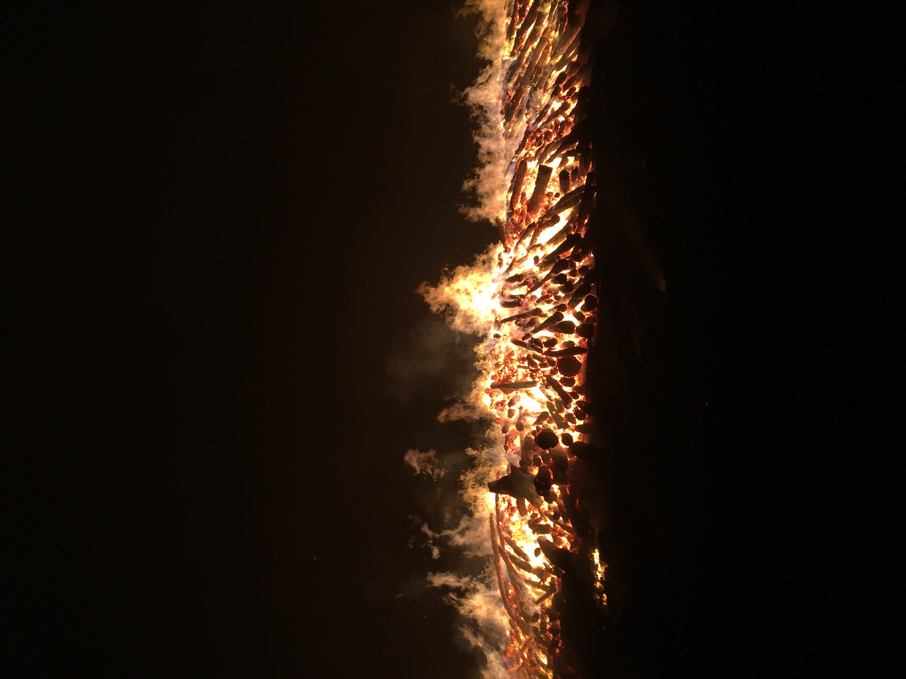
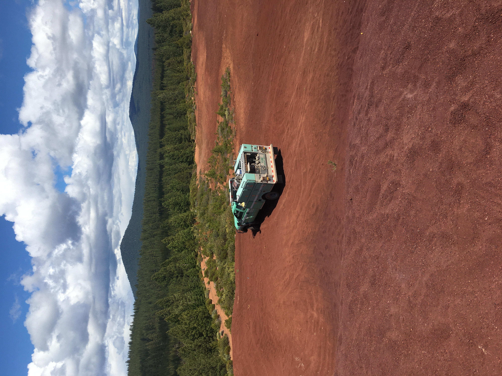
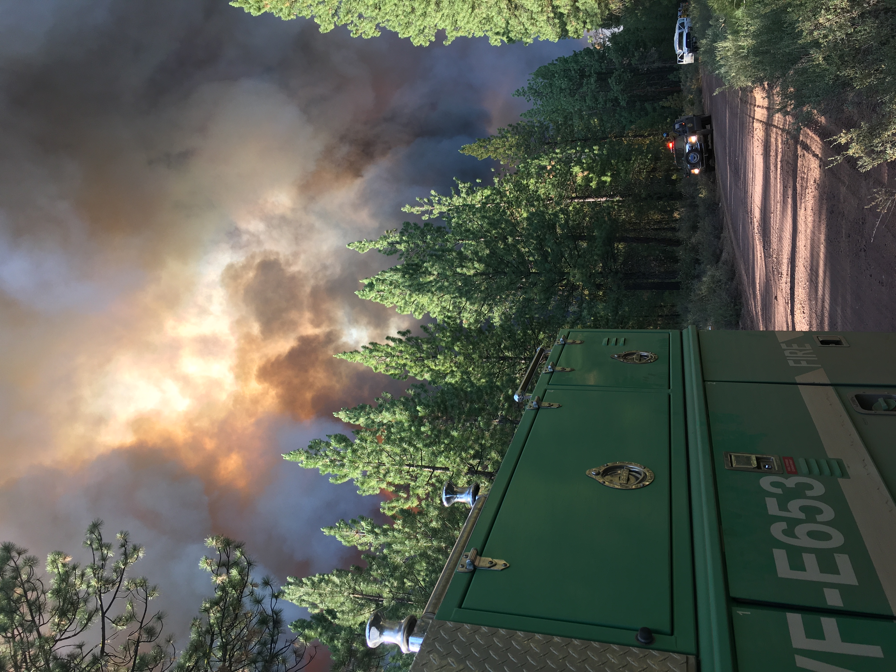
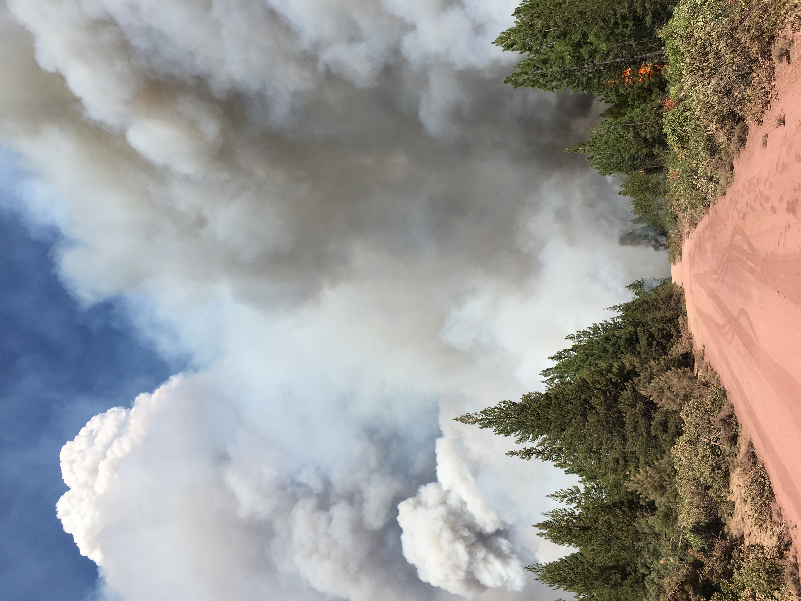

I worked on Engine 654 based out of the Chiloquin Ranger District on the Fremont-Winema National Forest for the summers of 2021 and 2022. Unfortunately all the cool stuff happened when I was actively working or running away, so below is a collection of all the things I managed to sneak a photo of.







